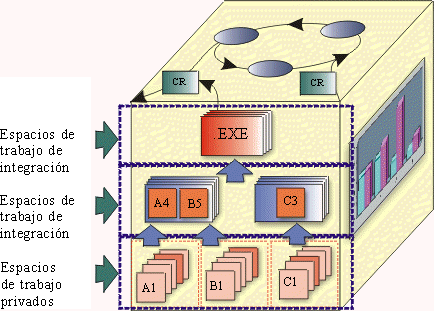

| Concepto: Espacios de trabajo |
 |
|
| Elementos relacionados |
|---|
DefiniciónLos espacios de trabajo hacen referencia a áreas 'privadas' donde los desarrolladores pueden implementar y probar código de acuerdo con los estándares adoptados del proyecto de forma relativamente aislada de otros desarrolladores. El gestor de configuración debe crear un entorno de espacio de trabajo para cada desarrollador del proyecto. ExplicaciónUn espacio de trabajo proporciona a cada desarrollador un entorno reproducible, económico, flexible y coherente que selecciona y presenta la versión adecuada de cada archivo. El espacio de trabajo debe proporcionar un control estricto del aislamiento y el compartimiento. Esto es necesario porque, en la mayoría de los proyectos, los desarrolladores necesitan aislarse de los cambios que realicen los demás; pero, al mismo tiempo, necesitan comprobar la unidad de sus cambios con los cambios realizados por otro desarrolladores. Cuando lleva a cabo el mantenimiento de releases antiguos, el desarrollador necesita ver versiones anteriores, binarios, documentos, pruebas, herramientas y otros objetos. En este caso, el espacio de trabajo sirve como una 'máquina del tiempo', hace que todo el entorno, no solamente los orígenes, tenga el aspecto que tenía en el pasado. Los espacios de trabajo de los desarrolladores deben estar aislados, por motivos de edición, compilación, pruebas y depuración. No obstante, el aislamiento del espacio de trabajo debe ser relativo, no absoluto:
Un espacio de trabajo puede ser totalmente privado de un desarrollador individual, o compartido entre un equipo de desarrolladores a través de una red. Además de proporcionar acceso a las versiones de origen, un espacio de trabajo debe proporcionar almacenamiento privado (aislado) a los archivos generados durante el desarrollo de software:
Los almacenamientos privados del espacio de trabajo suelen encontrarse en el directorio de inicio del desarrollador en una estación de trabajo. Un espacio de trabajo compartido por un grupo de desarrolladores puede tener un área de almacenamiento privada en un servidor central de archivos. Sin embargo, la ubicación real del almacenamiento privado es prácticamente irrelevante. Desde el punto de vista del desarrollador, el almacenamiento privado del espacio de trabajo debería aparecer totalmente integrado.  La figura anterior ilustra la noción de espacios de trabajo de integración y privados en el contexto general del cubo de CM. Configuraciones de trabajoLas configuraciones operativas (perfiles del espacio de trabajo) hacen referencia a subsistemas particulares que constituyen un conjunto de trabajo para el proyecto. Un conjunto de trabajo es una lista de versiones específicas de subsistemas que deben tener referencias, o modificarse, para implementar un trabajo. Esta lista puede representar la totalidad del sistema o un subconjunto. VistasUna vista proporciona acceso a un conjunto de archivos del repositorio de proyectos. Además, una vista proporciona acceso a un conjunto adecuado de versiones de dichos archivos:
Un espacio de trabajo, a veces también llamado vista, permite a los desarrolladores realizar y probar cambios en privado antes de compartir las modificaciones con el resto del equipo. Hay dos tipos de vistas:
Una vista de instantánea proporciona al desarrollador un entorno de trabajo estable e invariable. Es similar a un árbol de directorios del sistema. Una vista de instantánea está llena de copias de las versiones adecuadas de archivos de uno o varios repositorios de proyectos. Algunas personas utilizan el término "zona protegida" para referirse a este tipo de árbol de directorios. Cuando un desarrollador desea ver los cambios que realizaron otros miembros del equipo, actualiza la vista. Este estilo de trabajo se caracteriza como modelo pull, ya que consiste en la introducción activa de información importante, y no en su disponibilidad inmediata mediante mecanismos de renovación automática. Una vista dinámica es una estructura virtual de datos, ya que parece que contiene todos los datos de desarrollo. Las vistas dinámicas no realizan copias locales de archivos, pero dependen de la actualización inmediata de la red. Las vistas dinámicas pueden ser la mejor opción en las siguientes situaciones:
|
© Copyright IBM Corp. 1987, 2006. Reservados todos los derechos. |